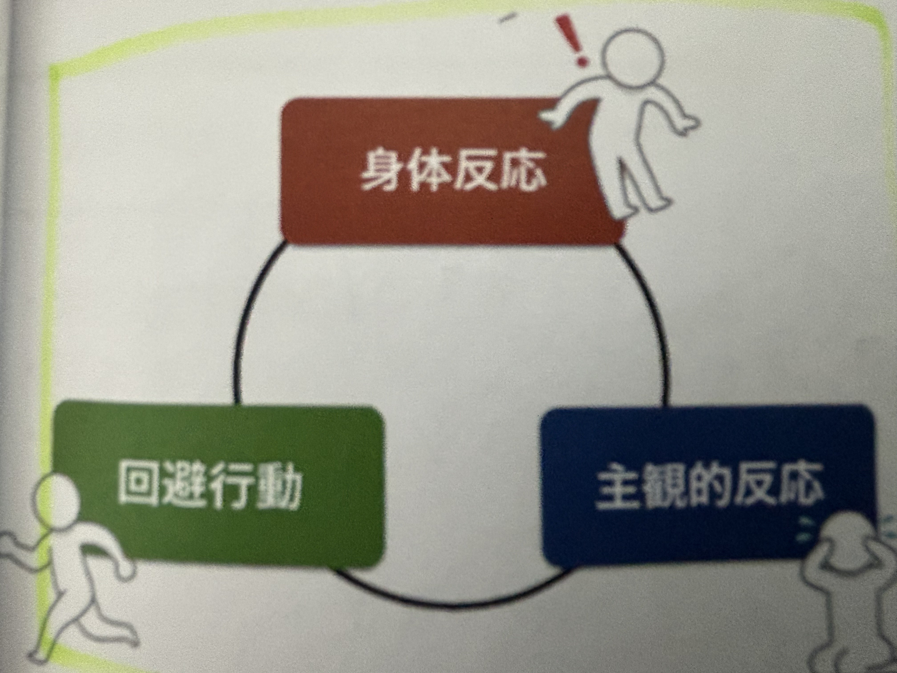
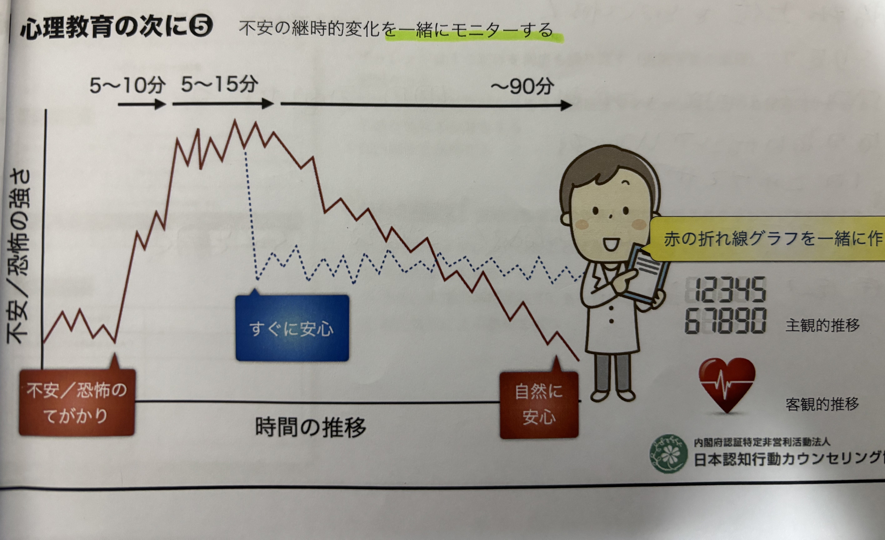

不安克服ワークブック
付箋を移動させて、不安が低い順（下から上へ）に並べてください。
階層表を確定する
あなたの不安階層表
SUD
状況・活動のステップ
心理教育①へ進む
心理教育①：不安の反応を知る

【図1】不安・恐怖を構成する3つの要素
1. 心理的・感情的な主観的反応
過剰な熟考:
メッセージを何度も見直し、極端に気にする。
拒絶への恐怖:
無視や批判への強い恐怖感。
ネガティブ螺旋:
「嫌われたかも」という思い込み。
2. 身体的な自律神経反応
動悸、手の震え、息苦しさ、胃の不快感・吐き気など。
3. 回避行動
避ける、よける、ひきこもる、後回しにする。

【図2】時間の経過とともに不安が下がる仕組み
ワークシート作成へ進む
エクスポージャーの記録
日付：
チャレンジ前
取り組むこと
予感
チャレンジ中の不安の推移（SUD）
1
2
3
4
5
6
7
8
9
10
11
12
13
14
15
16
17
18
チャレンジ後
結果
学び
記録を保存・印刷する
最初に戻る